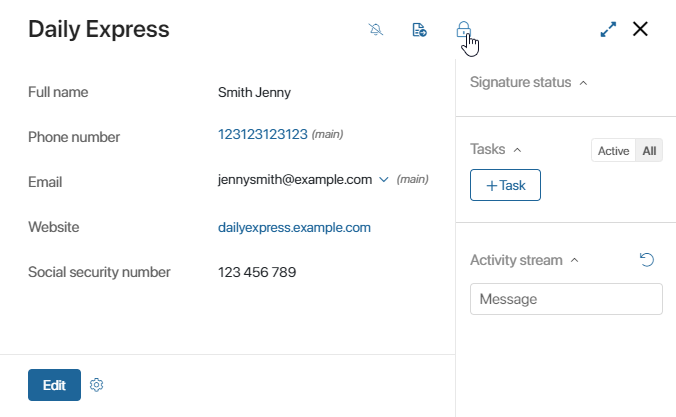
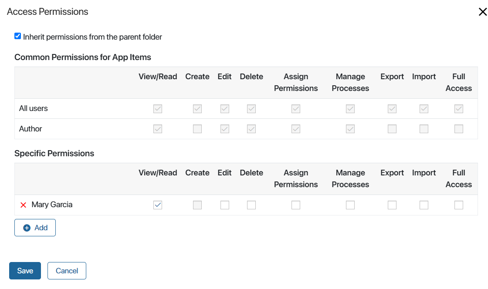
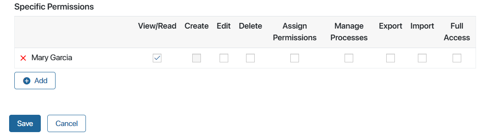

This is the most specific access restriction option that allows you to assign permission rules for certain app items to different users.
Use this option to configure permissions individually for each app item. Let’s say each sales rep in the sales department has access only to the contracts they work with. Data from contracts is considered confidential and cannot be shown to any other employees. Then you can grant the permission to view and edit a contract to its author and employees specified on the contract page as the superior and the approver.
With this access restriction option, you can also grant additional permissions for specific app items to let users complete one-time tasks. You can do so:
- On app item pages.
- In business process settings.
начало внимание
Only users included in the Administrators group can grant and restrict permissions to individual items in app access settings.
конец внимание
Please note that:
- You can select a different access restriction option:
- Restrict access to app items. The most general option. Assign the same permissions for all app items in an app.
- Restrict access to folders. Assign different users permissions for different app folders.
- Employees who regularly work with an app should be granted access to the workspace it belongs to and the app itself. Then they will be able to see all the data that they have access to by opening the app via the left menu.
- If some employees need one-time access to specific app items, for example, in business process tasks, they don’t need access to the workspace and app. They can open the app item page using a direct link, for example, from tasks.
If you want to restrict access to specific items, first set up general access permissions applied to all app items by default:
- Click the gear icon to the right of the app name and select Access Settings.
- Enable the following options: Restrict access to data > Restrict access to app items.
- Select who you want to assign permissions to. To do that, click the +Add button. This can be:
- A user, a group, or an org chart item.
- Author. The user who created the app item.
- App property. A property storing the employees to whom rights are granted. This option allows you to flexibly customize access in the app, as different employees can be stored in the selected property for each item. They will be automatically granted access, and when the value of the property changes, the permissions for the item will be updated.
You can specify a property of one of the types:
A property can be selected:
- From the context of the current app. For example, in the context of the Contracts app, there is the Approvers property. When creating a contract, an employee specifies in this field the users to whom the contract will be submitted for approval. When configuring access rights to contracts, add the Approvers property as an object for assigning rights. Then the employees who are selected as approvers on the contract page will automatically be granted access to this contract.
- From the app context associated with the current app. The option is available in the BRIX On-Premises edition when the
allowCollectionFieldPermissionsfeature flag is enabled. For example, in the context of the Supplementary Agreements app, there is a property referencing the main contract. On the Contracts app page, there is an Approvers field. When configuring access to additional agreements, you can assign permissions to the approvers on the contract page by selecting the Contracts > Approvers subproperty. In this case, the approvers specified when the contract was created will have access to the related supplementary agreements.
Please note that the search and sorting option is automatically enabled in the settings of the app property selected as the object for assigning permissions. You cannot disable the option.
- Specify which types of permissions will be available to the selected objects.
For the Author and App Property options, you cannot grant full access, as well as export and import permissions. These types of permissions are within the app, whereas the author and user in the property are defined after each item is created. Therefore, permissions for such employees are checked and granted individually for a specific item. Read more about applying different types of permissions to different system objects in BRIX TS SDK.
- Configure the options:
- Enable permissions inheritance based on org chart subordination. By default, managers are granted the same access rights to the app as their subordinates. To restrict access, disable the option.
- If access is denied, hide the list of users who can grant access rights. By default, an employee without access rights will see a list of users with the privilege of granting rights when trying to open the page of an app item. To hide the list, enable the option.
- Click Save.
Please note that general settings are automatically applied to all items created in the app. They cannot be revoked.
You can find another example of configuring access to specific app items in the Combinations of access permissions article.
Additional permissions for specific app items
If a user does not work with app items regularly, they may not be assigned access to the data in the app settings, as long as the restriction to the app item is applied.
In this case, additional rights can be granted for one-time tasks with certain items:
- On an app item page. Apart from the administrator, this can be done by users with the Assign Permissions access option.
- In the business process settings.
начало внимание
Additional permissions can only be granted if the access to app data is configured for app items.
конец внимание
Grant additional permissions on the app item page
It is possible to grant permissions to a certain app item on its page. This can be done by users with the Assign Permissions access option. Please note that this is only available if you have restricted access to specific app items.
Let’s say in the Job Openings app, only the HR department manager works with management positions. If this user is allowed to Assign Permissions, they can give another employee access to work with a certain job opening.
To grant or restrict access to a specific item:
- Go to the app and click the app item or open it using a direct link.
- Click the lock icon in the upper right corner.

In the window that opens, there are two sections:
- Common Permissions for App Items. In this section, you will see access settings applied to all items of the app. Settings specified here cannot be revoked.
- Specific Permissions. Here you can grant access to the app item to someone who is not added to the first section.
- Specify who you want to set additional permissions for. To do that, click the +Add button. You can choose a user, a group, or an org chart item.

- Tick the types of access permissions you want to grant and click Save.
Grant additional permissions in a business process
When users work with app items in business process tasks, access settings that are first checked are:
- Access to app data set up in the app access settings.
- Additional permissions configured on the page of an app item.
To let a user work with certain app items for one-time tasks, the administrator can grant additional permissions in a business process:
- In swimlane settings.
- In an App Item Permissions activity.
- In a script.
Please note that you can only assign additional permissions in a business process if the Restrict access to app items option is selected in the app access settings.
Let’s say access is set up for specific app items in the Contracts app. Users can only view contracts that they created. An employee is assigned the task to review a contract created by another user. In this case, granting the necessary permissions in the swimlane allows the employee to view the contract.
Permissions granted in the business process settings are displayed in an app item permissions settings, in the Specific Permissions section.

You can find an example of granting temporary permissions using the App Item Permissions activity in the Combinations of access permissions article.